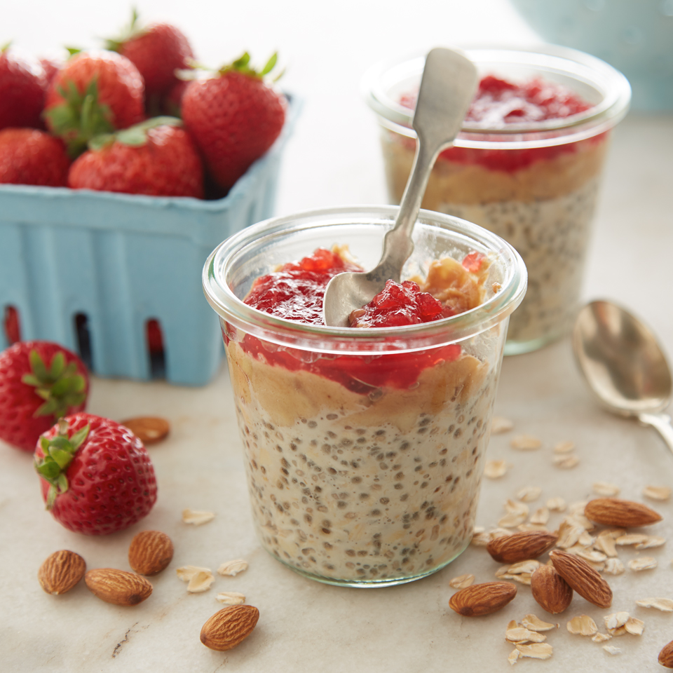

Overnight Oats

Description
This hearty, vegetable lasagna is the only lasagna my husband will eat. We love it!!! Hope you all enjoy as much as we do.
Ingredients
- ½ cup old-fashioned rolled oats
- 2 teaspoons chia seeds
- ⅔ cup Almond Breeze Vanilla almondmilk
- 2 tablespoons almond butter
- ½ small ripe banana
- 1 tablespoon strawberry preserves
Steps
- In wide-mouth pint jar or at least 12-ounce glass, mix oats, chia seeds, and almondmilk; let stand 3 minutes. Stir again.
- In small bowl, mash almond butter and banana until almost smooth. Drop over oats mixture. Top with preserves. Cover and refrigerate at least 8 hours or overnight.
- Uncover and stir slightly to serve.
Recipe Source